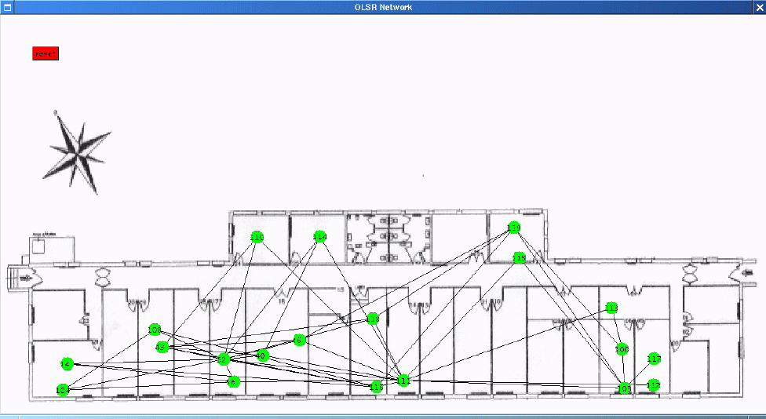

Example of a small OLSR network
- OLSR Ad Hoc Network in building 17 of INRIA Rocquencourt.
- View of the network from the node "52":
- All the link to neighbors of node "52" are represented
- The links present in the TCs received at "52" are represented.
-
A TC (Topology Control) is a subset of the links to the neighbors
broadcasted by some nodes
to the whole network (by
MPR-flooding
[demo]
). Hence, here, the full topology is not represented and
for instance, the only link to 117 is through 103.
